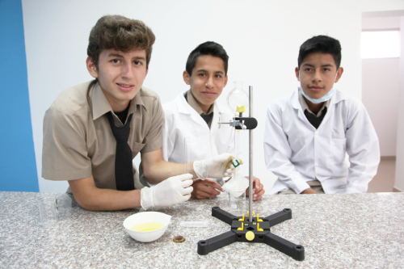

Sabias que.....?
debido a la falta de información hay muchos estudiantes que ya están en bachillerato pero no se encuentran en las especialidades deseadas
tambien hay muchos estudiantes de 10mo que ya tienen que realizar la eleccion de su especialidad pero no saben todavia cual escoger.
Sabes Porque.....?
La falta de orientacion en las instituciones y en los hogares es muy grande en algunos casos muchos estudiantes toman la decicion por tomarla y cuando ya estan cursando esa especialidad notan que es muy compleja y ya no les gusta desean cambiar de especialidad pero en algunos casos ya no se puede hay es cuando los estudiantes
ya no le ponen ganas al estudio pero recuerda querido estudiante tu que estas leyendo esto.... todo esfuerzo tiene su recompenza....Con cada paso que das hacia tu educación, estás construyendo el puente hacia un futuro brillante. ¡Sigue adelante con determinación y verás cómo tus sueños se hacen realidad pienza bien al escoger la especialidad
recuerda la decicion es solo tuya.

La Importancia de Elegir Bien
Seleccionar un bachillerato en ciencias o tecnico va más allá de simplemente adquirir conocimientos. Es una elección que define su camino,
influyendo en su desarrollo personal y profesional. Entendemos que esta decisión puede generar incertidumbre, pero también es
una oportunidad para descubrir sus verdaderas pasiones, habilidades y metas..
¿Cómo Abordar la Elección?
1.- Autoconocimiento:
Antes de explorar las opciones académicas, tómense un tiempo para reflexionar sobre ustedes mismos.
¿Cuáles son sus intereses?
¿Qué actividades los llenan de satisfacción?
¿Cuáles son sus habilidades naturales?
Conocerse a sí mismos es el primer paso para identificar las áreas que pueden brindarles cada especializacion.
"Aqui les dejamos algunos testimonios de los estudiantes mas destacados en las diferentes especialidades"
El estudiante Jose Guaranda de 3ro de bachillerato nos compartio su experiencia en la especialidad de Contabilidad prestemos
atencion a lo que nos tiene que decir....
"En el mundo de la contabilidad, cada cifra es un desafío que te impulsa a alcanzar nuevas alturas.
Convierte tu pasión por los números en la fuerza que te llevará a construir un futuro sólido y próspero.
¡El bachillerato en contabilidad te espera como el primer paso hacia una carrera llena de éxito y realización
personal!"
El estudiante Dylan Bazan de 3ro de bachillerato nos compartio su experiencia en la especialidad de Ciencias prestemos
atencion a lo que nos tiene que decir....
"En el bachillerato en ciencias, el universo es tu laboratorio y el conocimiento tu herramienta para explorarlo.
Cada descubrimiento es un paso más hacia el entendimiento del mundo que nos rodea. ¡Elige el camino de la ciencia y prepárate para desatar tu curiosidad,
resolver grandes misterios y crear un futuro lleno de innovación y avance para la humanidad!"
La estudiante Valeria Purizaga de 3ro de bachillerato nos compartio su experiencia en la especialidad de Informatica prestemos
atencion a lo que nos tiene que decir....
"En el bachillerato en informática, cada algoritmo que dominas es un paso más hacia el dominio de un universo de posibilidades.
Descubre el poder de la programación para dar vida a tus ideas, resolver problemas complejos y forjar un futuro donde la innovación es tu herramienta principal.
¡Conviértete en el creador de tu propio camino digital y deja que tu pasión por la tecnología te lleve más allá de los límites!"
Objetivos del Bachillerato en Ciencias:
* Desarrollo de habilidades analíticas:
El programa de bachillerato en ciencias busca fomentar el pensamiento crítico y analítico en los estudiantes,
ayudándolos a comprender y resolver problemas complejos en áreas como matemáticas, física, química y biología.
Preparación para estudios superiores:
Uno de los principales objetivos del bachillerato en ciencias es preparar a los estudiantes para cursar estudios universitarios
en campos relacionados con las ciencias. Proporciona una base sólida de conocimientos y habilidades necesarias para tener éxito en
programas de grado más avanzados.
Fomento del interés en la ciencia:
A través de una variedad de experiencias educativas, como laboratorios prácticos, proyectos de investigación y excursiones,
el bachillerato en ciencias busca cultivar el interés de los estudiantes por el mundo natural y los procesos científicos.
Matemáticas:
El bachillerato en ciencias incluye un enfoque sólido en matemáticas, que abarca álgebra, geometría, cálculo y estadísticas. Estas habilidades son fundamentales para comprender y aplicar conceptos en disciplinas científicas.
Ciencias naturales:
El plan de estudios suele incluir cursos de biología, química, física y otras ciencias naturales. Estos cursos proporcionan una comprensión profunda de los principios fundamentales de cada disciplina y su aplicación en el mundo real.
Laboratorios prácticos:
Los estudiantes del bachillerato en ciencias participan en actividades de laboratorio prácticas, donde aplican los conocimientos teóricos adquiridos en el aula, realizan experimentos y desarrollan habilidades prácticas de investigación.
En resumen, el bachillerato en ciencias es un programa educativo integral que prepara a los estudiantes para carreras en campos
científicos y tecnológicos, proporcionándoles una base sólida de conocimientos y habilidades para tener éxito en estudios superiores y en el mercado laboral.

Descripción del Bachillerato en Contabilidad:
El bachillerato en contabilidad es un programa educativo diseñado para brindar a los estudiantes una comprensión sólida de los principios contables, las prácticas financieras y la gestión empresarial. Este programa prepara a los estudiantes para carreras en contabilidad,
finanzas, auditoría, consultoría y gestión financiera en una variedad de industrias y sectores.
Objetivos del Bachillerato en Contabilidad:
El principal objetivo del bachillerato en contabilidad es proporcionar a los estudiantes una comprensión profunda de los principios contables, incluyendo la preparación de estados financieros, análisis de costos, gestión de activos y pasivos, y cumplimiento normativo.
Preparación para roles profesionales:
El programa prepara a los estudiantes para desempeñarse en roles profesionales en contabilidad y finanzas, tanto en el sector público como privado. Esto incluye puestos como contador público, analista financiero, auditor interno, asesor fiscal, entre otros.
Contabilidad financiera:
Los cursos en contabilidad financiera cubren temas como la preparación de estados financieros, la contabilización de transacciones comerciales, la valoración de activos y pasivos, y el cumplimiento de las normas contables internacionales.
Contabilidad de costos:
Los estudiantes aprenden sobre la asignación y control de costos en la producción de bienes y servicios, análisis de rentabilidad, presupuestos y toma de decisiones basada en costos.
Auditoría y control interno:
Se enseña a los estudiantes los conceptos y prácticas relacionados con la auditoría de estados financieros, el control interno, la evaluación de riesgos y el cumplimiento normativo.
En resumen, el bachillerato en contabilidad es un programa educativo que prepara a los estudiantes para carreras exitosas en el campo de la contabilidad y las finanzas, proporcionándoles las habilidades y conocimientos necesarios para tener éxito en roles profesionales relacionados con la gestión financiera y la toma de decisiones empresariales.

EL MINISTERIO DE EDUCACION NOS DICE .......